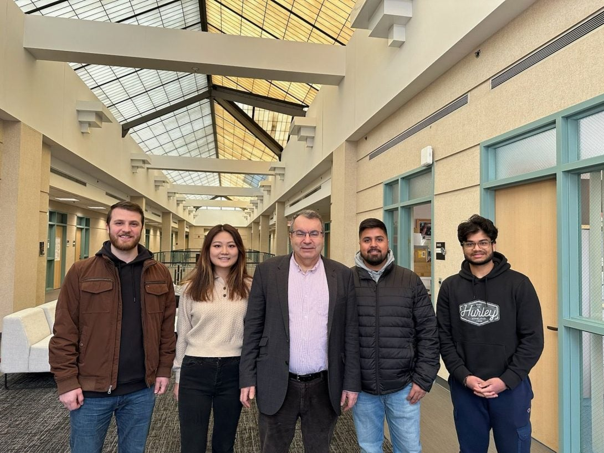

MRI Intensity Inhomogeneity Correction
VHU-Net investigates a variational approach incorporating Hadamard transforms for the correction of MRI intensity inhomogeneity.
View PublicationThe Cetin Lab conducts research in signal and image processing, computer vision, and efficient machine learning, with applications in environmental monitoring and biomedical imaging.

Our research examines mathematical and computational methods for signal and image analysis, including structured transforms, inverse problems, and neural network architectures. Particular emphasis is placed on computational efficiency and applications to sensing, imaging, and prediction.
Hadamard transform structure used in feature fusion
ZH-Mamba integrates Hadamard-fused Mamba-UNet models for prostate zonal segmentation and lesion localization with an anatomy-aware classifier for detecting clinically significant prostate cancer from MRI. The framework combines anatomical context with spatial and transform-domain feature representations.
Read the PreprintVHU-Net investigates a variational approach incorporating Hadamard transforms for the correction of MRI intensity inhomogeneity.
View PublicationA team including Emadeldeen Hamdan and Shuaiang Rong was selected as a finalist in NASA’s Beyond the Algorithm challenge for work involving quantum computing in Earth science applications.
View Faculty CVThe FireSENSE team presented its research on wildfire detection and prevention at NASA’s Minority Serving Institutions Incubator semifinalist pitch event.
Read UIC News Article